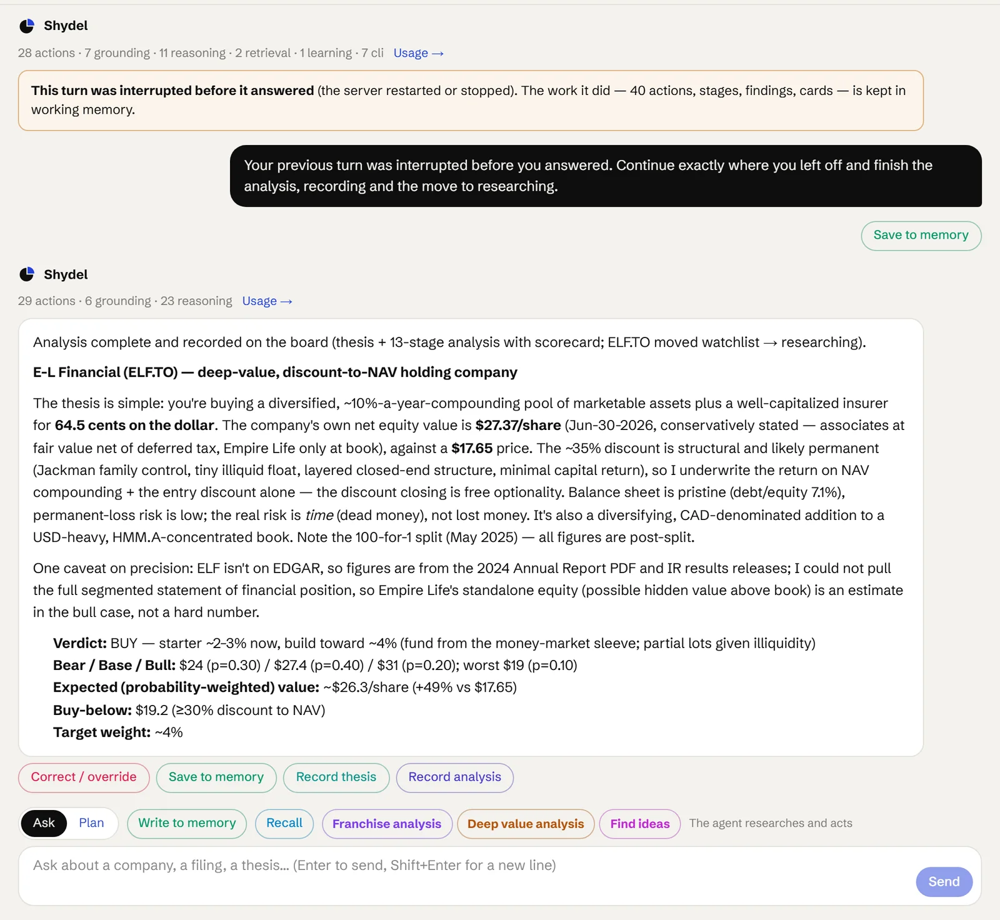
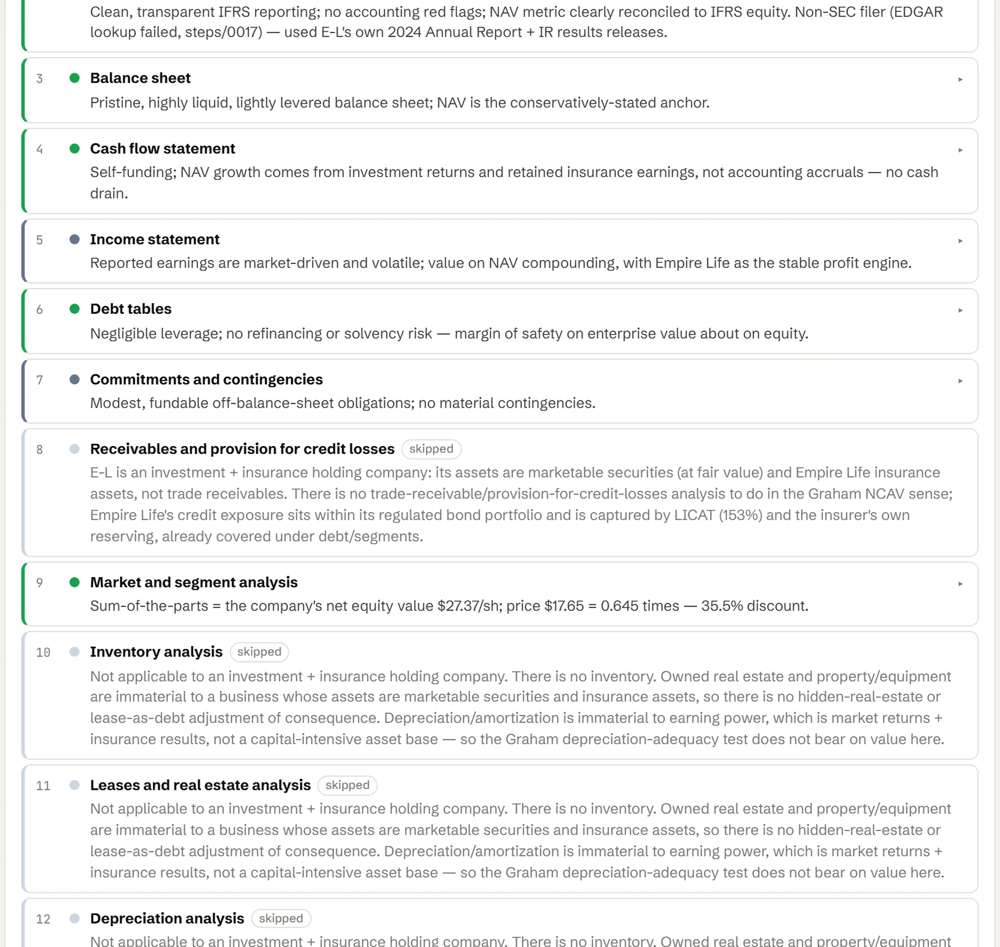
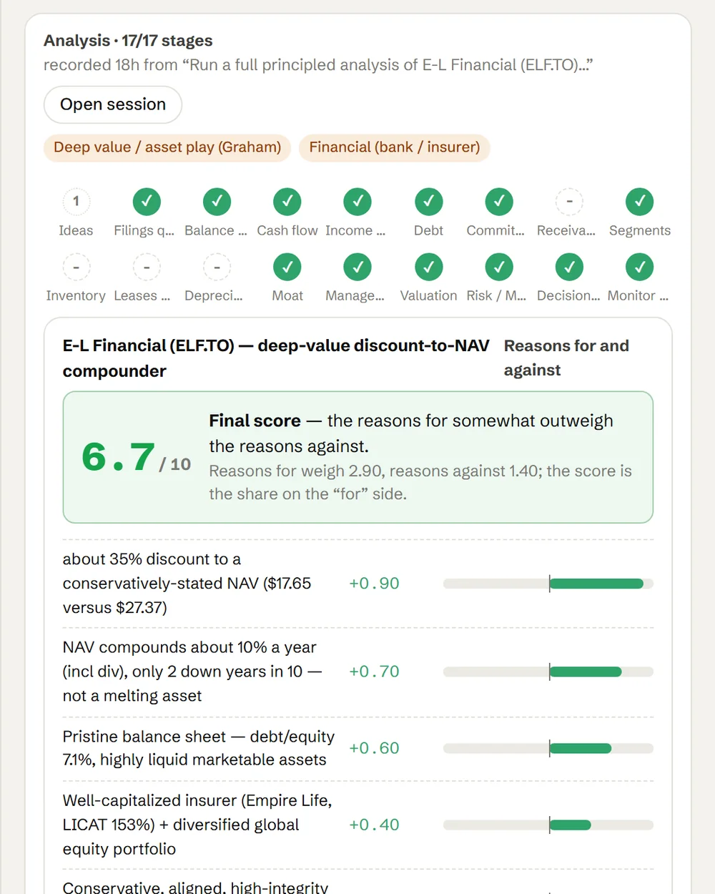

Gets better with your feedback.
When your investment committee overrules a view or an analyst corrects a figure, the agent learns from it and moves closer to your house view.
Banks, insurers and holding companies get their own lane and their own playbook. The agent values them on book value, net asset value and return on equity rather than earnings per share, reads regulatory capital and reserves in the debt stage, and records every finding against the annual report it came from.
In the first stage the agent marks a bank or insurer as a financial, and usually gives it a second type as well: a deep-value holding company, a quality franchise like an underwriter with a long record. The financial rules then apply at every stage, alongside the second type's. Reported earnings at a financial are often market-driven, so the agent values book value and net asset value, return on equity and capital ratios, and treats a low price to book in a levered financial as a question, not an answer.
Many of these companies file outside the SEC. The agent reads their own annual reports and supplemental packages from the investor-relations site, cited by page. Below: an analysis of E-L Financial, as the agent recorded it. Click any stage for its finding.
Run a full principled company analysis of E-L Financial Corporation Limited (ELF.TO), a TSX-listed Canadian insurance-and-investment holding company on the watchlist, and decide portfolio fit.
The same eighteen stages, read for a bank, insurer or holding company. Book value and regulatory capital carry the weight; inventory, leases and depreciation are usually skipped with the reason kept.
Screens banks, insurers and holding companies on price to book against return on equity; a low price to book in a levered financial is not, by itself, cheapness.
Annual reports, MD&A and supplemental packages, from EDGAR or the company's own site for non-SEC filers; the company classified, usually as financial plus a second type.
Book value and net asset value: what the assets are, how they are marked, and what stands between them and the common.
Operating cash flow at the parent and at the operating subsidiaries; what is free to pay dividends and buy back stock.
Underwriting results, net interest income and investment gains, kept apart: reported EPS at a financial is often market-driven.
Debt, preferreds and regulatory capital (LICAT, CET1, combined ratio, reserve development).
Unfunded commitments, guarantees, reserves for litigation and pension obligations.
Loan books and credit losses at a bank: provisions against charge-offs, through a cycle.
Segments and subsidiaries valued one by one: a sum of the parts against the market price.
Usually skipped, with the reason kept: a financial holds no inventory.
Owned property and leases, usually immaterial at a financial; skipped where they are.
Usually skipped: depreciation does not bear on the earning power of a balance-sheet business.
Underwriting discipline, deposit franchises, float and its cost, and the record through bad years.
Control, alignment and capital return: buybacks against book, specials, related parties.
Price to book and to NAV against return on equity; scenarios on book-value growth.
Reserve shocks, rate moves, leverage and the chance of a permanent loss.
Weight, buy-below and trim-above, and what the position does to the book's exposure to financials.
Book value per share, the discount to NAV and capital ratios, re-checked every quarter.
Financials carry their own rules on top of the firm-wide ones (a low price to book in a levered financial is not cheapness) and draw on the valuation skills a holding company needs: liquidating value, sum of the parts, capital allocation.
Every correction you make on a bank or insurer becomes a candidate rule for the financials scope, and is pushed at the stage it belongs to once you approve it.
How memory works →Banks and insurers sit in their own lane on the board, analysed through the same stages with the financial playbook.

The agent's answer for a financial leads with what the assets are worth, how they are marked and what the market discount is, then the verdict, the scenarios and the buy-below price. Figures from non-SEC filers are cited to the annual report page.

The findings read like a bank or insurance analyst's notes: how net asset value is built, regulatory capital, reserves and leverage, and why reported earnings are not the measure. Stages that do not apply to a balance-sheet business are skipped with the reason kept.

A financial is classified twice: as a financial, and as the kind of investment it is. Both sets of rules apply at every stage, and the scorecard weighs them together.
When your investment committee overrules a view or an analyst corrects a figure, the agent learns from it and moves closer to your house view.
Each figure links back to the page of the annual report or supplemental package it came from, so the team can check the work in seconds.
Book value, the discount to NAV and capital ratios are re-checked whenever a filing or a price move changes the picture.